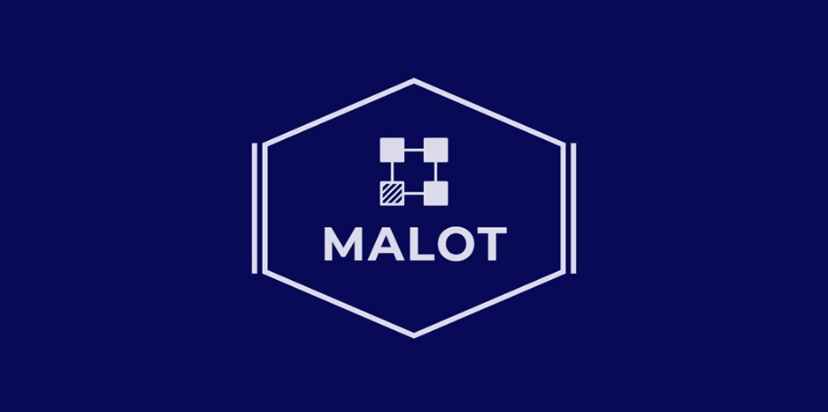

About
Motivation
The European Union’s (EU) renewable energy directive aims to achieve at least 32% of its total energy needs with renewables and at least 32.5% energy savings by 2030. It is encouraged to develop distributed and smart technologies to fulfil the EU’s energy union strategy, such as flexibility markets helping to incentivize changes in energy supply and demand, next generation of low-carbon energy technologies and the application of AI technologies, etc. As mentioned above, the emerging Energy Internet (EI) provides potential and feasible solutions to developing sustainable and environmentally friendly energy resources, hybrid energy utilization model, flexible energy management and secure system control, which fits well with the EU energy development strategy. Moreover, all the research topics (i.e., the structure planning, distributed optimal control and trading operation) are the key research and fundamental issues in EI, which are eager to be solved to achieve the envisioned EI conception and promote energy development in Europe.
Abstract
The planning, operation and control is of importance to the EI. With large numbers of energy routers (ERs) integrated into EI, the EI system becomes more complex and variable. This state of affairs renders it is necessary to develop new architecture, modelling, optimization and control methods, in order to achieve intelligent, distributed, reliable, flexible and cooperative system operation for EI. To this end, the researcher proposes the following three unique researcher actions in this project, including: 1) controllable structure planning for multi-ER-based EI under different environments (before and after fault) from the concept of controllability view; 2) distributed and adaptive cooperated control strategies based on deep policy gradient algorithm to enable each microgrid adaptively to respond to the system model switching without the need of exact system dynamics; 3) multiple timescale power trading model and distributed optimization algorithm to achieve both optimal energy generation/consumption and optimal energy flow allocation among ER with faster convergence rate in different timescales.
Project Information
Principal Investigator: Yushuai Li
Project Supervisor: Prof. Yan Zhang
Host: University of Oslo
This project has received funding from the European Union's Horizon 2020 research and innovation program under the Marie Skłodowska-Curie Actions (Grant No. 101023244).